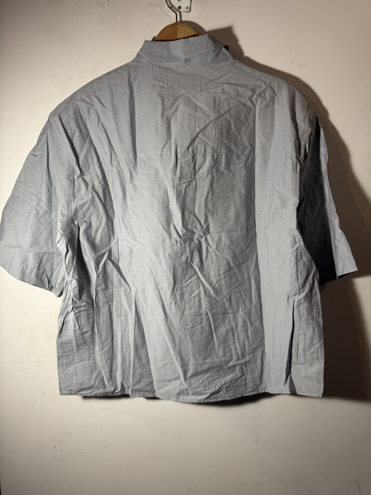
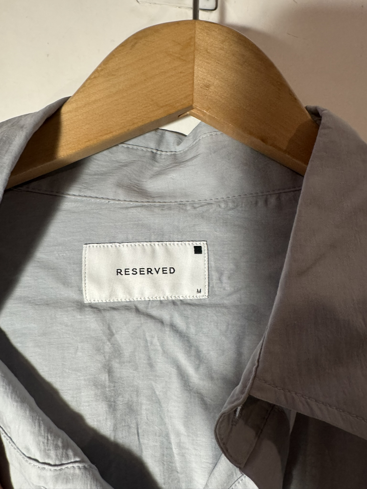
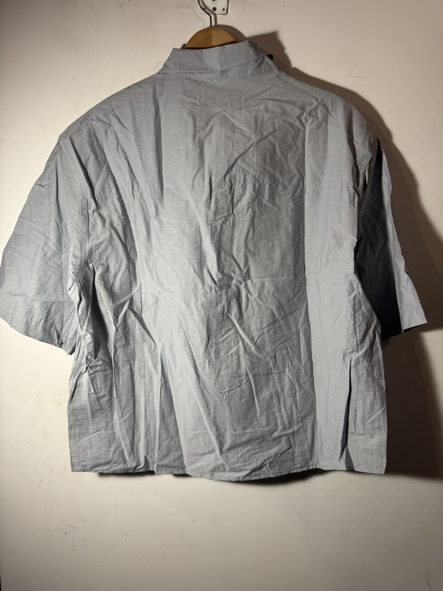
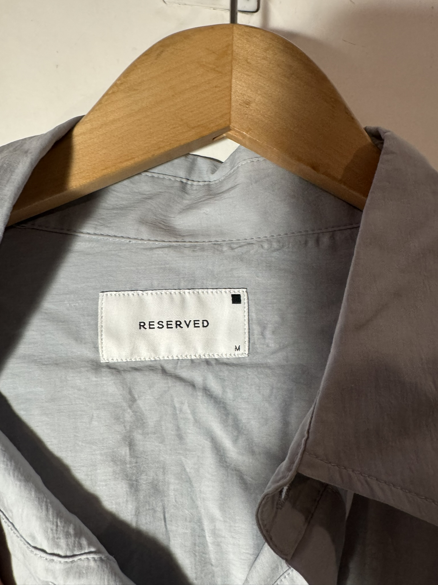

$250.00 MXN
Descripción
Camisa de manga corta con corte relajado y grandes bolsillos frontales de parche, confeccionada en tejido ligero con tacto de papel (paper touch) para un look técnico y moderno.
Marca
Reserved
Tallas Disponibles
M
Comprar por WhatsApp 💬